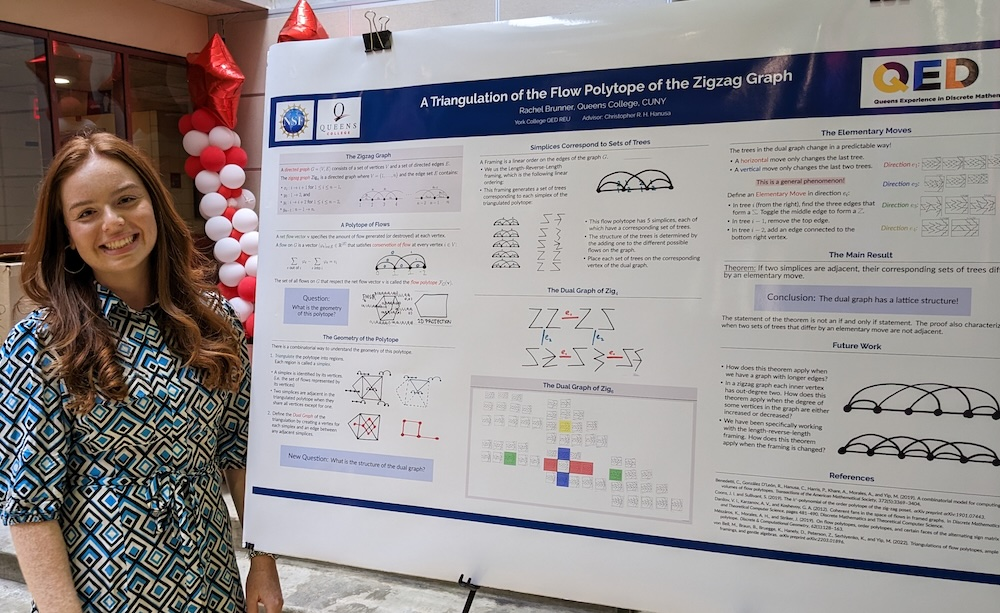
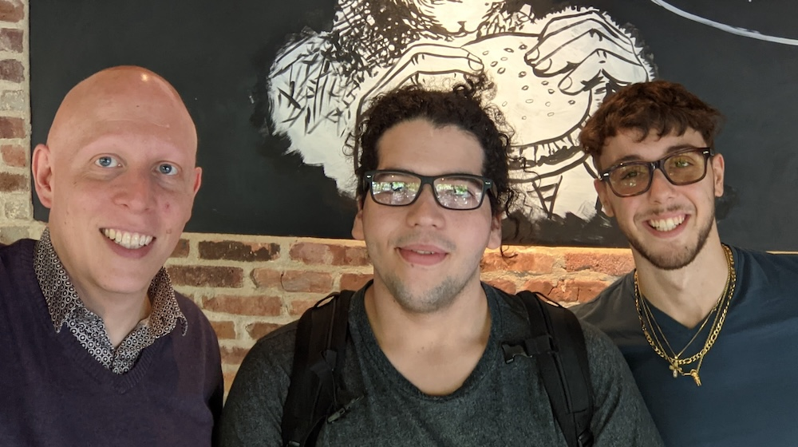
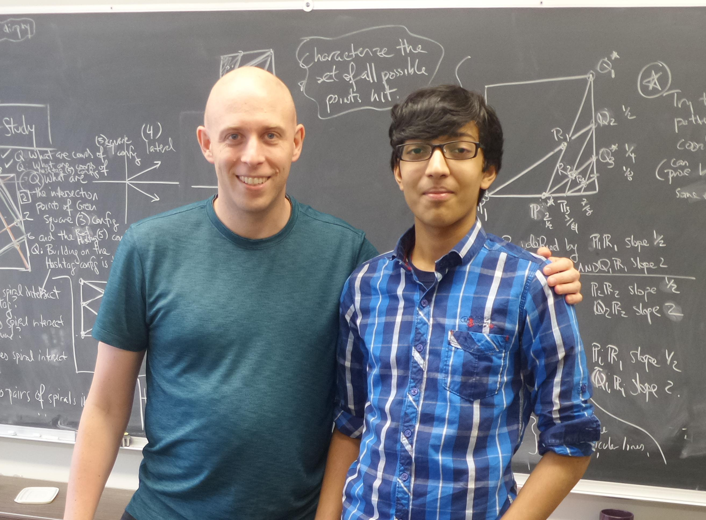
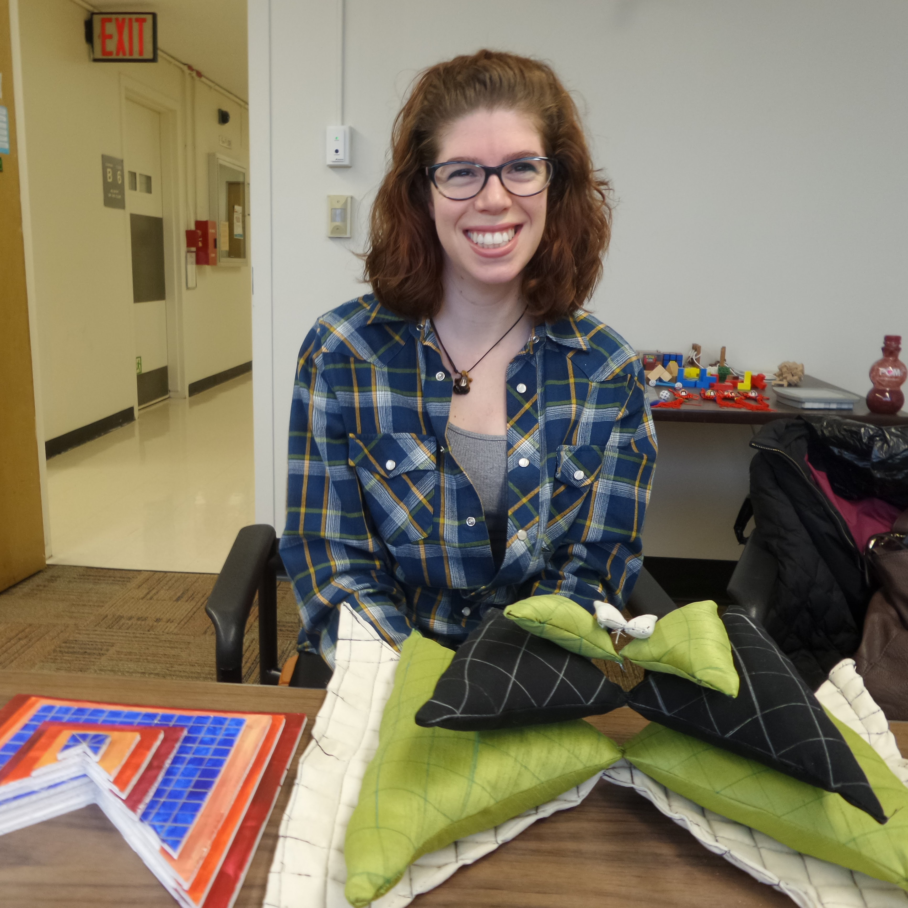
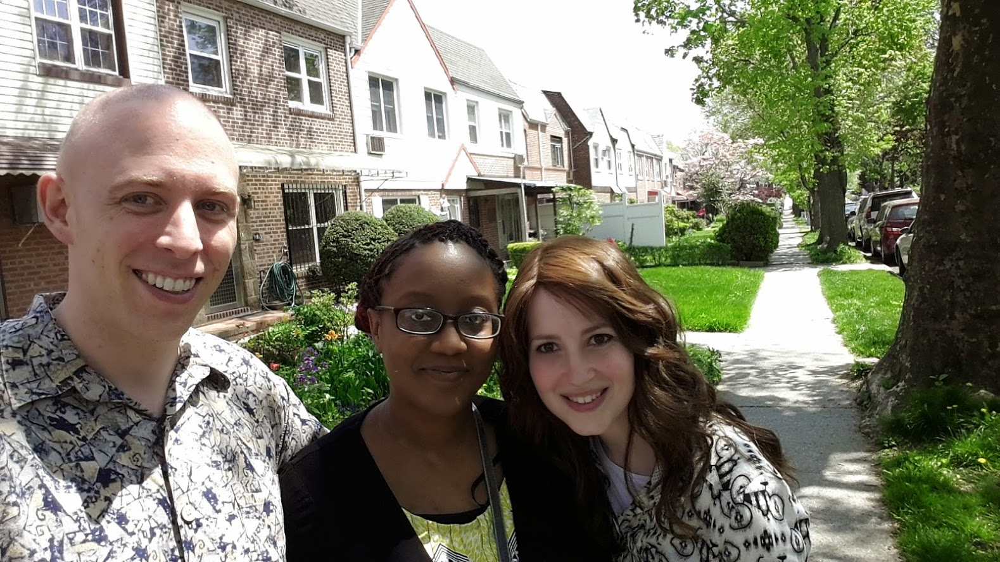
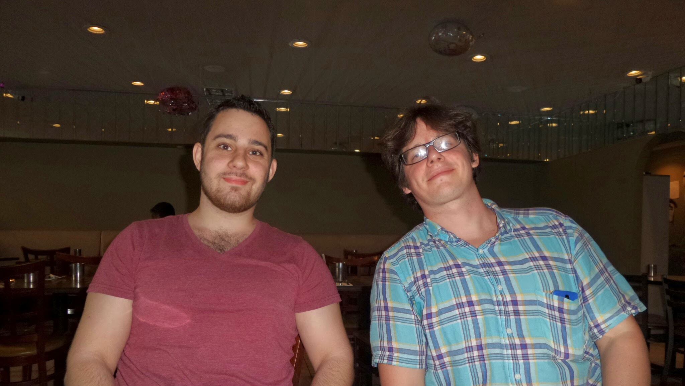
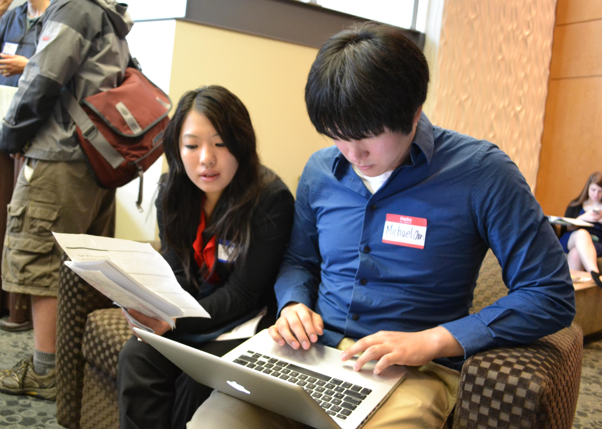

Experimental Mathematics Lab
Welcome to the Queens College Experimental Mathematics Laboratory,* where undergraduate students use computation to discover and prove new mathematics.
*Who says physical scientists get to have all the fun? And all the labs? I declare my office to be a laboratory!
What is Experimental Mathematics?
Experimental mathematics means using computer software to generate all objects satisfying desired conditions. We then analyze this set of objects, leading to conjectures based on the collected data, and to insight that informs proof. While in other sciences experiments give approximations, our experiments always give exact results. It's up to us to learn and prove what we can!
Join the Lab
Prof. Hanusa supervises a few students every semester on projects in the exp(ML). The best preparation to participate is to take his Combinatorics class and to have some programming experience.
- Interested? Contact Prof. Hanusa directly to join the fun.
Lab Alumni
- Spring 2026: Joyce Pan, Chayim Steinberg, Lukas Tarrao
- Fall 2022–Spring 2023: Rachel Brunner — co-authored A triangulation of the flow polytope of the zigzag graph

- Fall 2020–Spring 2022: Christopher Soto, Peter Antonaros — Created artvote.net and analyzed voter preferences

- Spring 2019: Yanxi Piao, Jeremy Quail
- Fall 2018: Christopher Soto
- Fall 2017–Spring 2018: Juhyun (Eunice) So
- Spring 2016–Spring 2017: Arvind Mahankali — co-authored A billiards-like dynamical system for attacking chess pieces

- Fall 2015: Tamar Ehrenreich, Davida Popik, Riley Hanson

- Spring 2015: Riley Hanson, Miriam Striks, Aleksandr Yaroslavskiy, Roman Bohdanowycz


- 2013: Kirsten Berger, Matthew DeAndrade
- Fall 2011–Spring 2012: Amy Lee, Michael Chon — co-authored Solving multivariate functional equations

- Spring 2010: Michael Pandazis